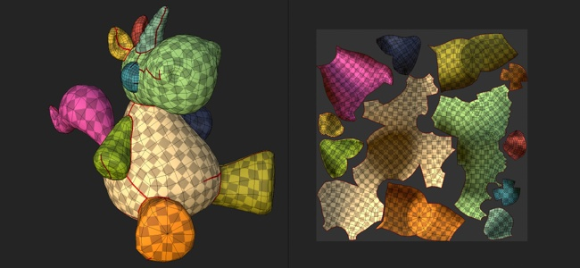
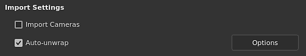
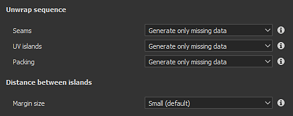

Section
Automatic UV Unwrapping

The automatic UV unwrapping allow to generate UV islands automatically when importing a 3D model. It can be used to paint on 3D model that don't have any existing UVs.
Enabling the automatic UV unwrapping

When creating a new project or re-importing a mesh into an existing project, make sure the setting "Auto-unwrap" is checked. If disabled, the process will be skipped and mesh UVs will remain as-is.
UV unwrapping settings

When importing a mesh and using the unwrapping process, the following settings are available. Some settings are available via the Options button in the interface.
|
|
Setting |
Description |
|---|---|---|
|
Unwrap sequence |
Seams |
Controls if the seams (UV island borders) should be generated only for meshes that don't have them or always regenerated. Possible values:
|
|
UV islands |
Controls if the UV unwrapping should generated from meshes without UVs or for any meshes. Possible values:
|
|
|
Packing |
Controls the packing/layout of UV islands of the meshes. Possible values:
|
|
|
Layout customization |
Margin size |
Defines the spacing between UV islands. This setting applies a general percentage independent from the resolution. Possible values:
|
|
UV island orientation |
Control the orientation of the UV islands during the packing process. Possible values:
|
|
|
UV Tiles |
Maximum number of UV Tiles |
If the UV Tiles workflow is enabled, this settings determine the maximum number of tiles to produce to distribute on the UV islands. |
|
Optimization |
Avoid elongated UV islands |
If enabled, this process will split UV islands considered too long to improve the usage of the texture space. Example of before (top) and after (bottom): 
|
Known limitations
Below is a list of limitations related to the unwrapping process:
- Processing high poly meshes can take a long time.
- Vertices at the exact same coordinates are merged
- UV Generation may fail on some mesh parts in some rare cases
- Non uniform or highly distorted texel ratio in a single UV island in some cases
- Non uniform texel ratio between Texture Sets
- UV island generated can be very elongated and do not fit into UV space in some cases
- Degenerated faces or non-triangular mesh faces with small or overlapping edges may not get UV unwrapped